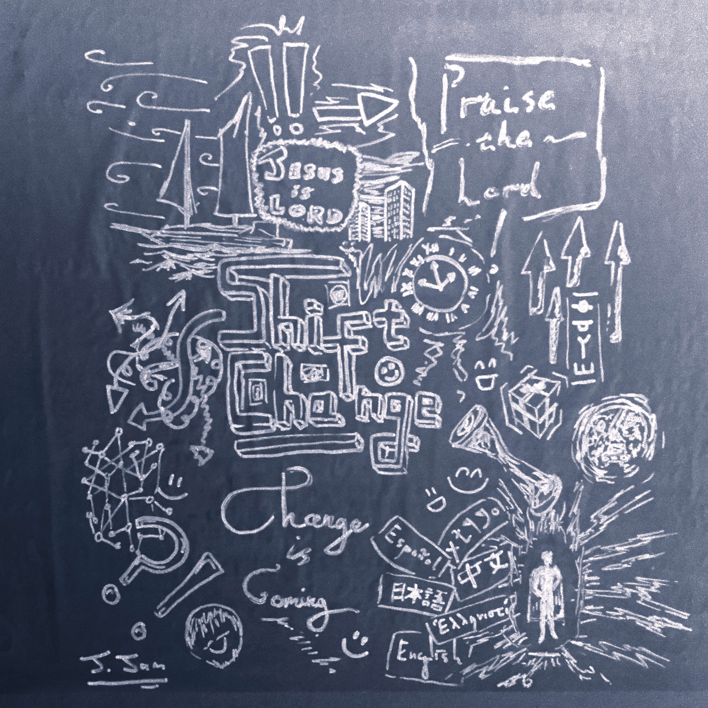

Shift Change!!
This is a whiteboard picture I drew of the upcoming shift-change based on sister Shawna's videos. It's actually a whiteboard drawering, but the colours have been inverted.

Interesting facts about the image:
- The word on the right next to the arrows says "Holy" in ancient Hebrew.
- Beneath that is a portal. If you look carefully, you can see a car coming out of it.
- The arrows on the left represent peole's lives.
- The ship is because I like sailing!
- The present on the right represents getting gifts.
- Finally, the smiling faces sdotted around the image represent rejoicing and being happy at this time.
God bless you!
Ahoy
Welcome to ma website. Jesus Christ is my Lord. God bless all of humanity. My name is Jack. My favorite food is... well, I don't know. I haven't tried all foods, so Idk. I like cheesecake and roast potatoes though. Err... not in the same dish. That would be pretty odd. I guess it's somewhat like how we can only see a small range of colours compared to the full spectrum of electromagnetic radiation. Have a nice day! And may the LORD OF LIFE bless you!
Update on the table of contents
Wow, the table of contents looks so empty. It only has, let's see... two items in it? WOW. Not very useful is it?
This a test section
This is here to test the stickyness of the menu. This section could use some dummy text. well, at least it now has three sections.